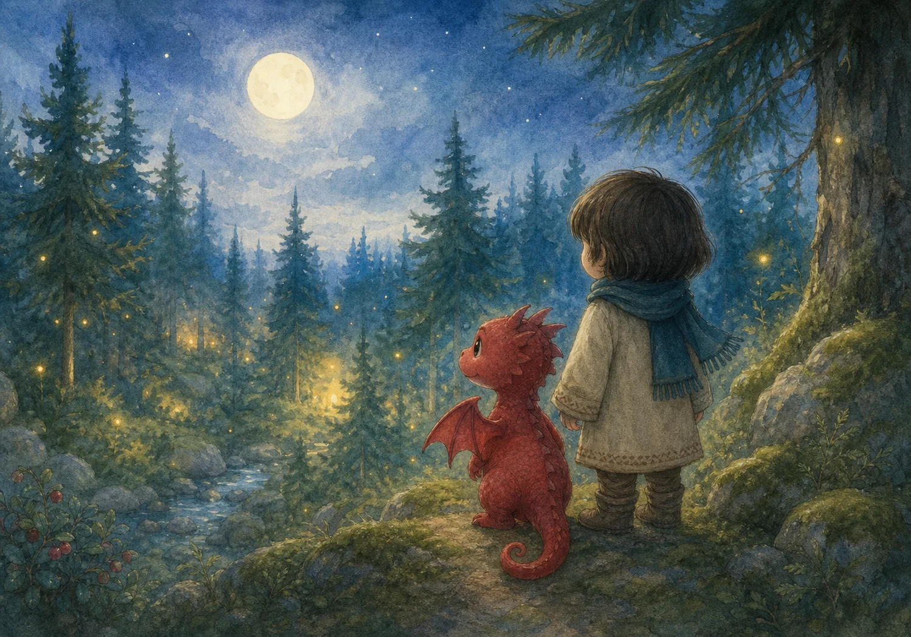
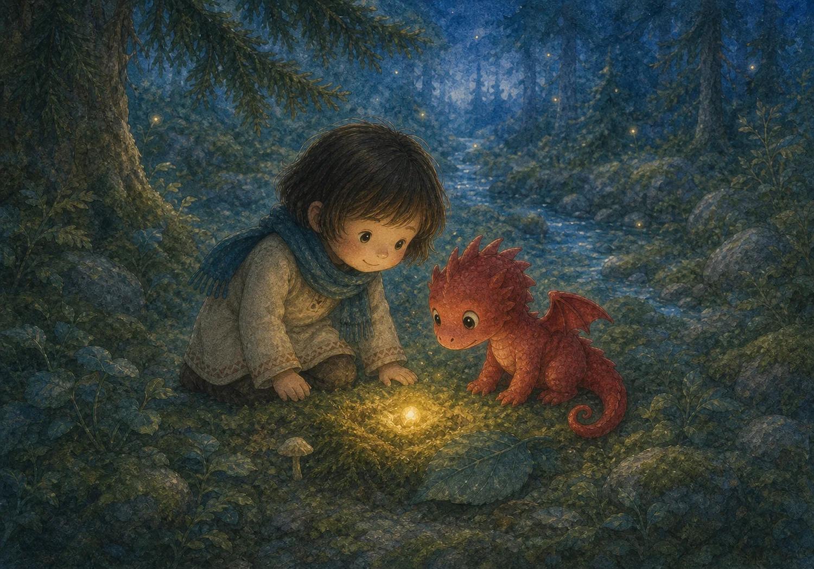
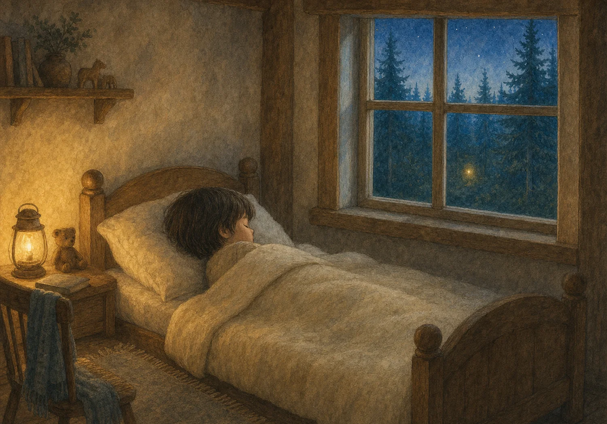

EN GODNATTSAGA FÖR 0–3 ÅR
Den lilla draken och den borttappade glöden
En varm liten saga om att leta, lysa och hitta hem.
Tryck för att få sagan uppläst.

När kvällen blev blå
När kvällen blev blå, tittade barnet ut genom fönstret. Bakom den gamla stenen blinkade skogen. Bara barnet kunde se den.
"Hej!" viskade en röst. Det var Den lilla draken. Hen hade små lingonröda vingar och en svans som viftade när hen blev glad.
"Min glöd är borta," sa draken. "Utan den blir min kvällsmacka alldeles kall."
När kvällen blev blå
tittade barnet ut då.
Bakom den gamla stenen, grå
blinkade skogen, stilla och blå.
"Hallå!" viskade en röst.
Barnet log; det var en tröst.
Det var Den lilla draken, glad
med röda vingar på ett blad.
Hen hade en svans som viftade så
när hen blev glad och ville gå.
"Min glöd har gått bort, åh nej!"
"Utan den blir kvällsmackan kall för mig."

En liten prick av ljus
Barnet och draken gick försiktigt mellan mossiga stenar. De lyssnade efter ett pling. De tittade under ett blad. De tittade bakom en liten svamp.
"Där!" sa barnet.
I mossan låg en pytteliten glöd. Den lyste mjukt som en varm lampa.
Barnet och draken gick därpå
mellan mossiga stenar, två och två.
De lyssnade efter ett pling
och kikade runt i en ring.
De tittade under ett blad
och bakom en svamp som stod så glad.
"Där!" sa barnet. "Glöden är fin!"
"Ja, den lyser mjukt för draken min."
Pytteliten låg den i mossan, en glöd
som lyste varmt som nybakat bröd.
Glöden hittar hem
Draken höll glöden nära magen. "Tack," sa hen. "Nu kan vi värma mackan – men först kan glöden värma dina händer."
Barnets händer blev varma och skogen blev lugn. Ugglan sa god natt. Löven susade god natt.
Vid den gamla stenen vinkade Den lilla draken. "Vi ses när kvällen blir blå igen."
Draken höll glöden i sin hand.
"Tack," sa hen, "nu blir det varmt i vårt land."
Mackan kunde vänta för den snälla draken.
Först värmde hen barnets händer, det var saken.
Barnets händer blev varma av glöd
och drakens kvällsmacka blev varm som bröd.
Ugglan sa: "God natt, lilla skatt."
Löven susade: "God natt."
Vid den gamla stenen, grå
vinkade draken och sa så.
"Vi ses när kvällen blir blå igen."
"Ja," sa barnet, "vi ses igen."
Hemma under täcket
Barnet gick hem till sitt vanliga rum. Under täcket kändes händerna fortfarande lite varma.
Utanför fönstret glimmade en enda liten prick bland träden.
God natt, lilla glöd.
God natt, lilla drake.
God natt, du.
Barnet gick hem till sitt vanliga rum.
Under täcket var händerna varma och ljum.
Utanför fönstret glimmade en prick
bland träden, just där vägen gick.
God natt, lilla glöd, sov mjukt i natt.
God natt, lilla drake och du, min skatt.
